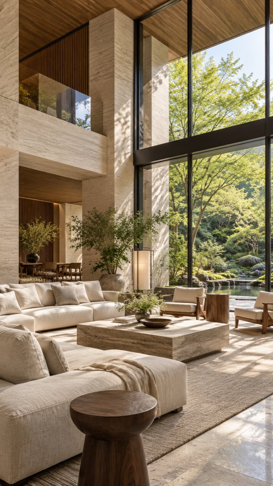
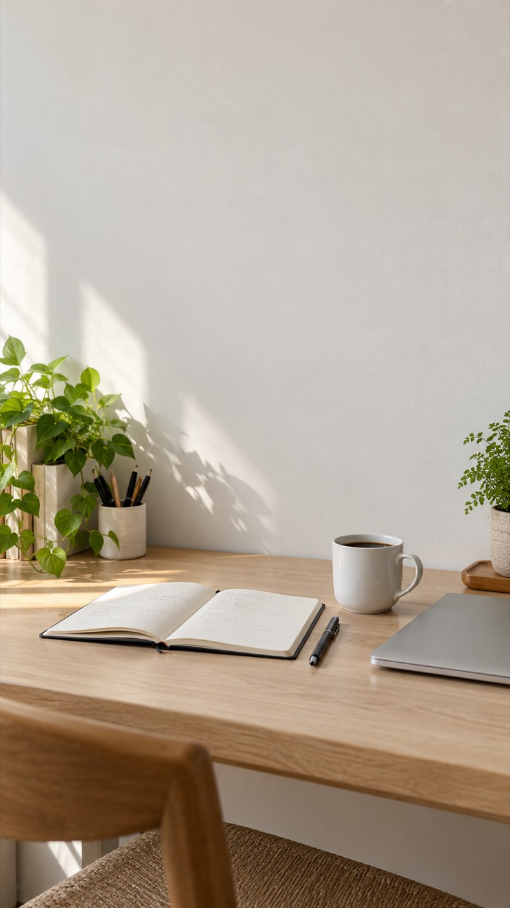
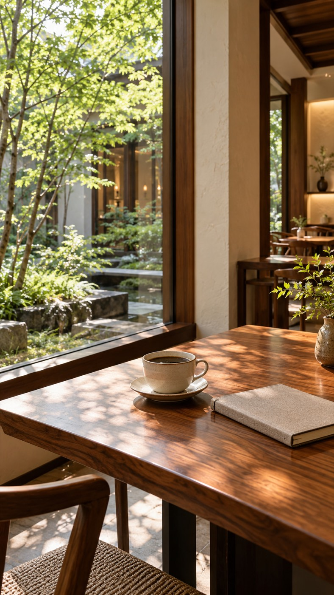
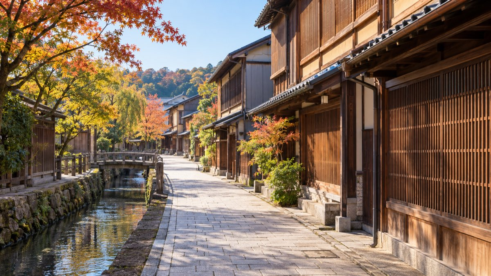

11月3日・SNSコンサル受講生向け
アフレコリールの
背景素材を
集めよう。
旅先の景色や空間を、
次の発信に使えるストックに。
2026.11.03 ｜ SNSコンサル講義


背景素材とは
声に合わせる、景色や空間の動画。
後から録った声に、
背景動画を合わせる。
背景動画を合わせる。
海、山、ホテル、カフェなど。
この講義では、その背景素材を
集める大切さを考えます。
背景に使う補助的な映像を
「B-roll（ビーロール）」とも呼びます。
アフレコの台本例
＋好きな場所で
過ごす時間も、
作っていきたい。
この資料の作例は静止画です。音声・動画の再生はありません。
背景素材の比較
同じ語りでも、背景で印象が変わる
同じアフレコの台本例
音声・動画の再生はありません
「好きな場所で過ごす時間も、作っていきたい。」
どちらから、旅先で過ごす時間を想像しますか。
背景だけを替えた静止画比較音声・動画の再生はありません

好きな場所で過ごす時間も、作っていきたい。
好きな場所で過ごす時間も、作っていきたい。
背景が伝えること
背景があると、言葉の情景を想像できる。
「好きな場所で
過ごす時間」
過ごす時間」
海が見える景色なら、
旅先でゆっくり過ごす場面が浮かぶ。
見える景色も、語りの一部。
旅先でゆっくり過ごす雰囲気を、背景で伝える。
集めておきたい素材
「こんな時間を過ごしてみたい」と思える背景。

世界観は、投稿全体から感じる雰囲気。
選ぶ背景にも、自分が伝えたい暮らしや価値観を表せます。
背景の選び方
語りと背景の組み合わせ。
過ごす時間を作りたい」
気分が変わる」
考えてみる」

書き出してみる」
どれも台本例。自分が実際に話す内容に合わせて選びましょう。
背景を選んでみましょう
この語りに、どの背景を合わせますか。
台本例「少し立ち止まると、やることが見えてくる。」
1つ選んで、どんな気持ちを伝えたいか考えてみてください。
組み合わせの考え方
伝えたい気持ちから、背景を決める。
さっきの語りには、どの背景も使えます。
「何を感じてほしいか」で、選ぶ素材が変わります。
素材をストックする理由
素材があれば、台本に合わせて選べる。
1
外出先で集めておく旅先や、ふだんと違う場所で。
2
使える素材を残しておく景色や空間ごとに保存する。
3
台本に合う背景を選ぶ伝えたい雰囲気に合わせる。

あとから同じ景色を撮り直しに行くのは大変。
その場所にいるときに、使えそうな素材を集めておきましょう。
集めた素材の保存
どんな話に使えるかを、ひと言残す。
素材を見返したときに、使う場面が浮かぶ名前に。
撮った日と場所も一緒に残しておくと、あとで探しやすくなります。